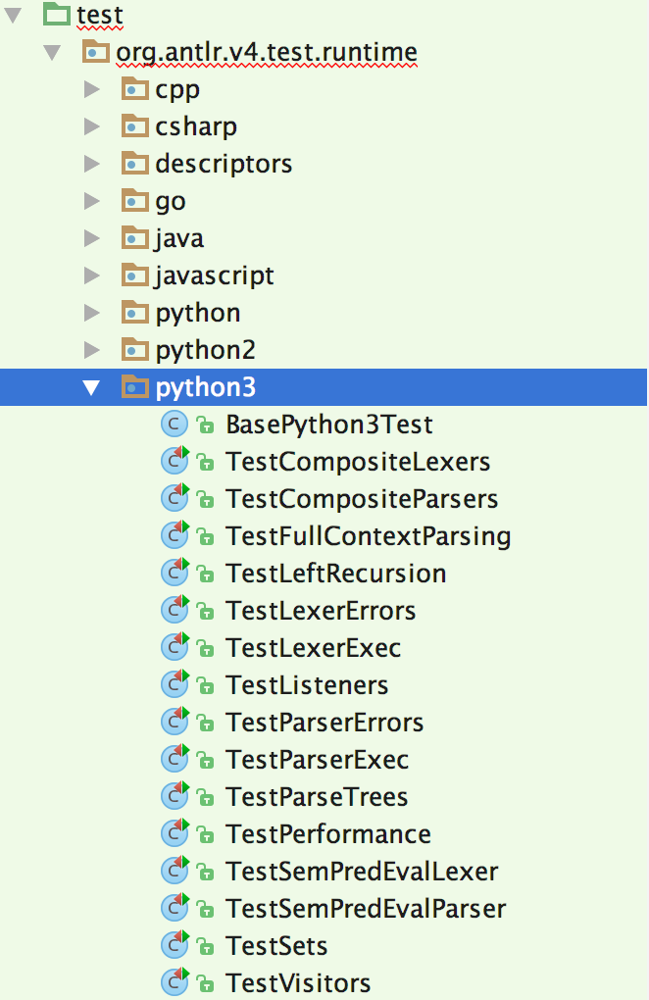
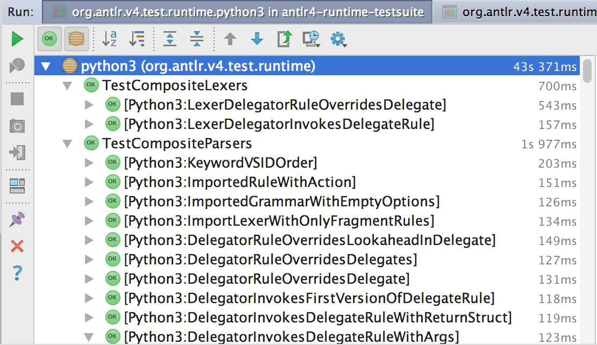

1. ANTLR project unit tests
1.1. Introduction
Because ANTLR supports multiple target languages, the unit tests are broken into two groups: the unit tests that test the tool itself (in tool-testsuite) and the unit tests that test the parser runtimes (in antlr4/runtime-testsuite). The tool tests are straightforward because they are Java code testing Java code; see the section at the bottom of this file.
The runtime tests must be specified in a generic fashion to work across language targets. Furthermore, we must test the various targets from Java. This usually means Java launching processes to compile, say, C++ and run parsers.
As of 4.6, we use a Java descriptor object to describe each runtime test. Unit tests are grouped together into categories such as ParserExecDescriptors, which has multiple nested descriptor objects, one per test. For example, here is the start of that file:
public class ParserExecDescriptors {
public static class APlus extends BaseParserTestDescriptor {
public String input = "a b c";
public String output = "abc\n";
public String errors = "";
public String startRule = "a";
public String grammarName = "T";
/**
grammar T;
a : ID+ {
<writeln("$text")>
};
ID : 'a'..'z'+;
WS : (' '|'\n') -> skip;
*/
@CommentHasStringValue
public String grammar;
}
The mysterious @CommentHasStringValue annotation is a bit of a hack that allows multi-line strings in Java. This kung fu is required so that we can use Java classes rather than StringTemplate group files to specify runtime tests (the legacy system used those and it was hard to get them right). Here are all the Runtime test descriptors organized into groups.
The grammars are strings representing StringTemplates (ST objects) so <writeln("$text")> will get replace when the unit test file is generated (Test.java, Test.cs, ...). The writeln template must be defined per target. Here are all of the
Target templates for runtime tests.
1.2. Requirements
In order to perform the tests on all target languages, you need to have the following languages installed:
mono(e.g.,brew install mono) on non-Windows boxes (on Windows it uses the Microsoft .net stack). Also mustxbuildthe runtime before tests will run; see belownodejs- Python 2.7
- Python 3.6
- Go
- Swift 4 (via XCode 10.x) tested currently only osx
- clang (for C++ target)
- To install into local repository
~/.m2/repository/org/antlr, do this:
$ export MAVEN_OPTS="-Xmx1G" # don't forget this on linux
$ mvn install -DskipTests=true # make sure all artifacts are visible on this machine
Now, make sure C# runtime is built and installed locally.
cd ~/antlr/code/antlr4/runtime/CSharp/src
rm -rf `find . -name '{obj,bin}'`
dotnet build -c Release runtime/CSharp/src/Antlr4.csproj
C++ test rig automatically builds C++ runtime during tests. Others don't need a prebuilt lib.
1.3. Running the runtime tests
A single test rig is sufficient to test all targets against all descriptors using the junit parameterized tests mechanism. But, that is inconvenient because we often want to test just a single target or perhaps even just a single test within a single group of a single target. I have automatically generated a bunch of Target runtime test rigs that allow developers such flexibility. For example, here are the Python3 test rigs in intellij:

And the result of testing the entire subdirectory:

From mvn, on the commandline, you will see:
$ cd antlr4
$ mvn test
...
-------------------------------------------------------
T E S T S
-------------------------------------------------------
Running org.antlr.v4.test.runtime.csharp.TestCompositeLexers
dir /var/folders/s1/h3qgww1x0ks3pb30l8t1wgd80000gn/T/TestCompositeLexers-1446068612451
Starting build /usr/bin/xbuild /p:Configuration=Release /var/folders/s1/h3qgww1x0ks3pb30l8t1wgd80000gn/T/TestCompositeLexers-1446068612451/Antlr4.Test.mono.csproj
dir /var/folders/s1/h3qgww1x0ks3pb30l8t1wgd80000gn/T/TestCompositeLexers-1446068615081
Starting build /usr/bin/xbuild /p:Configuration=Release /var/folders/s1/h3qgww1x0ks3pb30l8t1wgd80000gn/T/TestCompositeLexers-1446068615081/Antlr4.Test.mono.csproj
Tests run: 2, Failures: 0, Errors: 0, Skipped: 0, Time elapsed: 3.451 sec
Running org.antlr.v4.test.runtime.csharp.TestCompositeParsers
dir /var/folders/s1/h3qgww1x0ks3pb30l8t1wgd80000gn/T/TestCompositeParsers-1446068615864
antlr reports warnings from [-visitor, -Dlanguage=CSharp, -o, /var/folders/s1/h3qgww1x0ks3pb30l8t1wgd80000gn/T/TestCompositeParsers-1446068615864, -lib, /var/folders/s1/h3qgww1x0ks3pb30l8t1wgd80000gn/T/TestCompositeParsers-1446068615864, -encoding, UTF-8, /var/folders/s1/h3qgww1x0ks3pb30l8t1wgd80000gn/T/TestCompositeParsers-1446068615864/M.g4]
...
[INFO] ------------------------------------------------------------------------
[INFO] Reactor Summary:
[INFO]
[INFO] ANTLR 4 ............................................ SUCCESS [ 0.445 s]
[INFO] ANTLR 4 Runtime .................................... SUCCESS [ 3.392 s]
[INFO] ANTLR 4 Tool ....................................... SUCCESS [ 1.373 s]
[INFO] ANTLR 4 Maven plugin ............................... SUCCESS [ 1.519 s]
[INFO] ANTLR 4 Runtime Test Annotations ................... SUCCESS [ 0.086 s]
[INFO] ANTLR 4 Runtime Test Processors .................... SUCCESS [ 0.014 s]
[INFO] ANTLR 4 Runtime Tests (2nd generation) ............. SUCCESS [06:39 min]
[INFO] ANTLR 4 Tool Tests ................................. SUCCESS [ 6.922 s]
[INFO] ------------------------------------------------------------------------
[INFO] BUILD SUCCESS
[INFO] ------------------------------------------------------------------------
[INFO] Total time: 06:53 min
[INFO] Finished at: 2016-11-16T15:36:56-08:00
[INFO] Final Memory: 44M/458M
[INFO] ------------------------------------------------------------------------
Note: That is actually result of running the much faster:
mvn -Dparallel=methods -DthreadCount=4 install
1.4. Running test subsets
From the runtime-testsuite dir
1.4.1. Run one test group across targets
$ cd runtime-testsuite
$ export MAVEN_OPTS="-Xmx1G" # don't forget this on linux
$ mvn -Dtest=TestParserExec test
-------------------------------------------------------
T E S T S
-------------------------------------------------------
Running org.antlr.v4.test.runtime.cpp.TestParserExec
...
Tests run: 32, Failures: 0, Errors: 0, Skipped: 0, Time elapsed: 114.283 sec
Running org.antlr.v4.test.runtime.csharp.TestParserExec
...
Or run all lexer related tests:
$ cd runtime-testsuite
$ mvn -Dtest=Test*Lexer* test
-------------------------------------------------------
T E S T S
-------------------------------------------------------
Running org.antlr.v4.test.runtime.cpp.TestCompositeLexers
...
1.4.2. Run all tests for a single target
$ cd runtime-testsuite
$ mvn -Dtest=java.* test
...
Or run all lexer related tests in Java target only:
$ cd runtime-testsuite
$ mvn -Dtest=java.*Lexer* test
...
-------------------------------------------------------
T E S T S
-------------------------------------------------------
Running org.antlr.v4.test.runtime.java.TestCompositeLexers
Tests run: 2, Failures: 0, Errors: 0, Skipped: 0, Time elapsed: 1.277 sec
Running org.antlr.v4.test.runtime.java.TestLexerErrors
Tests run: 12, Failures: 0, Errors: 0, Skipped: 0, Time elapsed: 2.376 sec
Running org.antlr.v4.test.runtime.java.TestLexerExec
Tests run: 38, Failures: 0, Errors: 0, Skipped: 0, Time elapsed: 10.07 sec
Running org.antlr.v4.test.runtime.java.TestSemPredEvalLexer
Tests run: 7, Failures: 0, Errors: 0, Skipped: 0, Time elapsed: 1.255 sec
Results :
Tests run: 59, Failures: 0, Errors: 0, Skipped: 0
1.5. Testing in parallel
Use this to run tests in parallel:
$ export MAVEN_OPTS="-Xmx1G"
$ mvn -Dparallel=methods -DthreadCount=4 test
...
-------------------------------------------------------
T E S T S
-------------------------------------------------------
Concurrency config is parallel='methods', perCoreThreadCount=true, threadCount=4, useUnlimitedThreads=false
...
This can be combined with other -D above.
1.6. Adding a runtime test
To add a new runtime test, first determine which group of tests it belongs to. Then, add a new RuntimeTestDescriptor implementation by subclassing one of:
- BaseParserTestDescriptor; see example APlus.
- BaseDiagnosticParserTestDescriptor if you want to test parser diagnostic output; see example output.
- BaseCompositeParserTestDescriptor; see example BringInLiteralsFromDelegate
- BaseLexerTestDescriptor; see example ActionPlacement.
- BaseCompositeLexerTestDescriptor; see example LexerDelegatorInvokesDelegateRule
Each descriptor object describes the following mandatory elements for the test:
- the test type
- the grammar
- the start rule
- the input text to parse or lex
- the expected output
- the expected errors
Your best bet is to find a similar test in the appropriate group and then copy and paste the descriptor object, creating a new nested class within the test group class. Modify the field definitions to suit your new problem.
If you need to create a whole new group of tests, it requires a new descriptor class; call it XDescriptors. Then, in each target subdirectory, you need to create a new test rig TestX.java file:
package org.antlr.v4.test.runtime.java;
import org.antlr.v4.test.runtime.BaseRuntimeTest;
import org.antlr.v4.test.runtime.RuntimeTestDescriptor;
import org.antlr.v4.test.runtime.descriptors.ListenersDescriptors;
import org.junit.runner.RunWith;
import org.junit.runners.Parameterized;
@RunWith(Parameterized.class)
public class TestX extends BaseRuntimeTest {
public TestX(RuntimeTestDescriptor descriptor) {
super(descriptor,new Base<TARGET>Test());
}
@Parameterized.Parameters(name="{0}")
public static RuntimeTestDescriptor[] getAllTestDescriptors() {
return BaseRuntimeTest.getRuntimeTestDescriptors(XDescriptors.class, "<TARGET>");
}
}
where <TARGET> is replaced with Java, Cpp, CSharp, Python2, ... in the various subdirectories.
1.6.1. Ignoring tests
In order to turn off a test for a particular target, we need to use the ignore method. Given a target name, a descriptor object can decide whether to ignore the test. This is not always convenient but it is fully general and works well for the one case we have now where we have to ignore Visitor tests in all targets except JavaScript.
1.6.2. Target API/library testing
Some parts of the runtime API need to be tested with code written specifically in the target language. For example, you can see all of the Java runtime API tests here:
Notice that it is under an api dir. The directory above is where all of the Test* files go.
1.6.3. Cross-language actions embedded within grammars
To get:
System.out.println($set.stop);
Use instead the language-neutral:
<writeln("$set.stop")>
Template file runtime-testsuite/resources/org/antlr/v4/test/runtime/templates/Java.test.stg has templates like:
writeln(s) ::= <<System.out.println(<s>);>>
that translate generic operations to target-specific language statements or expressions.
1.7. Adding an ANTLR tool unit test
Just go into the appropriate Java test class in dir antlr4/tool-testsuite/test/org/antlr/v4/test/tool and add your unit test.